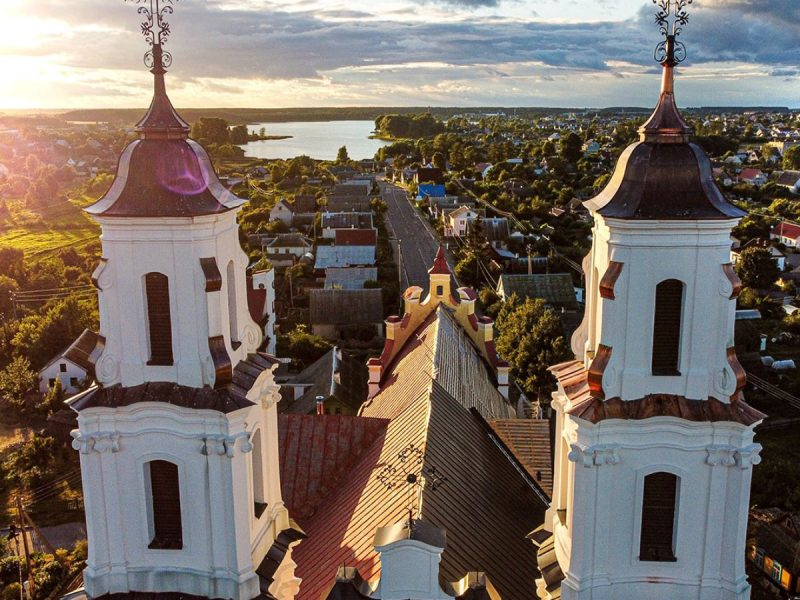

Авторские блоги путешественников

сгущенка — колдуны — авторские сыры
Смак Поозерья
Сегодня мы с вами отправимся в Глубокский район, где увидим, как рождается на свет легендарная сгущёнка и позавтракаем с видом на памятник архитектуры барокко. Затем узнаем, как крестьяне Плисы сохранили убранство своей церкви и отведаем местной ухи с колдунами. А вечером нас ждет арт-хутор "Мастеровые", где хозяева готовят сыр, запросто дающий фору итальянскому!